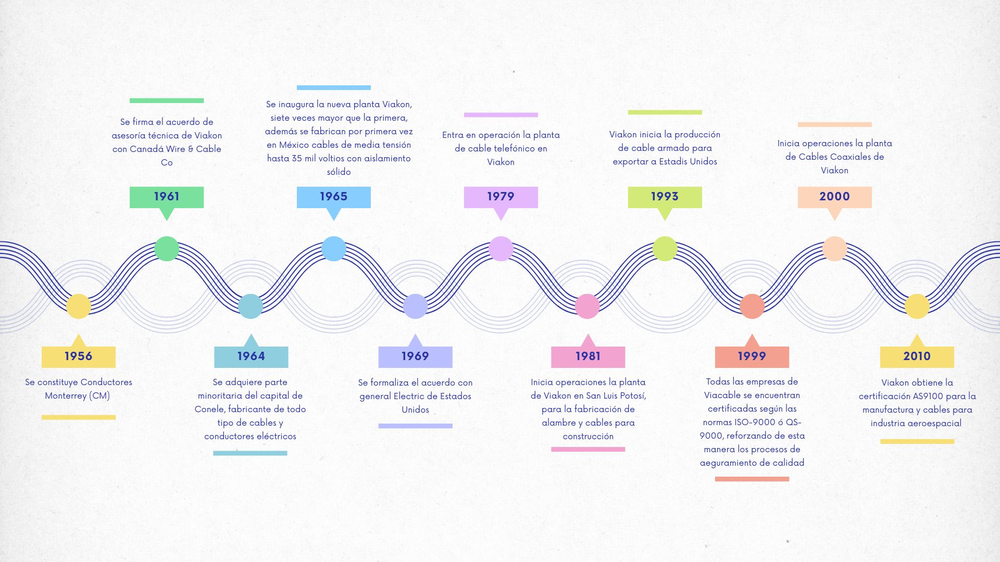
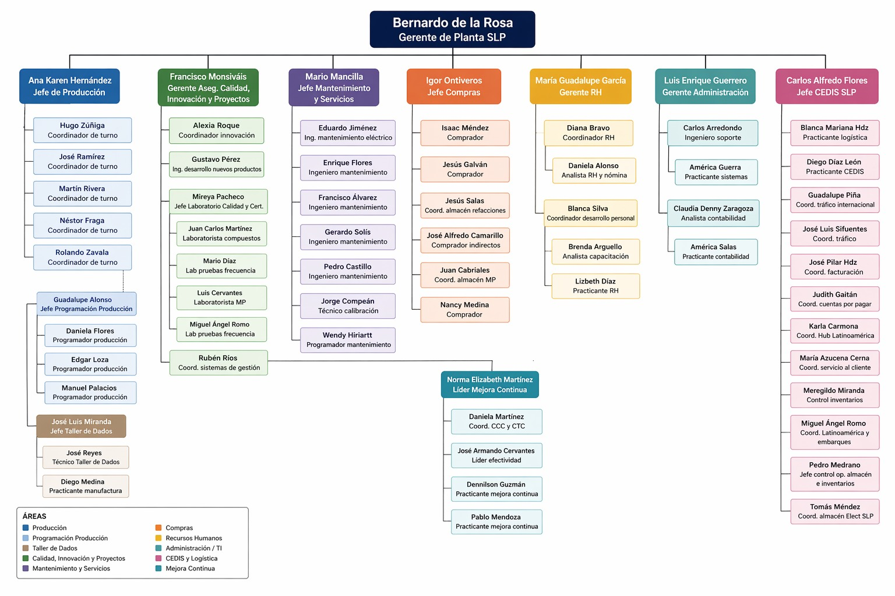
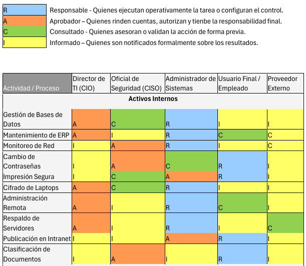
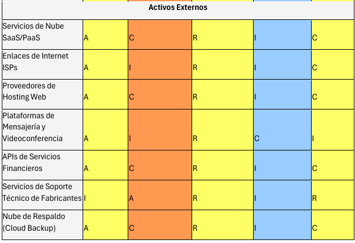
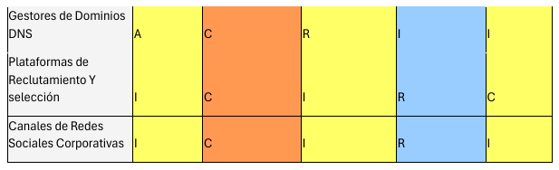
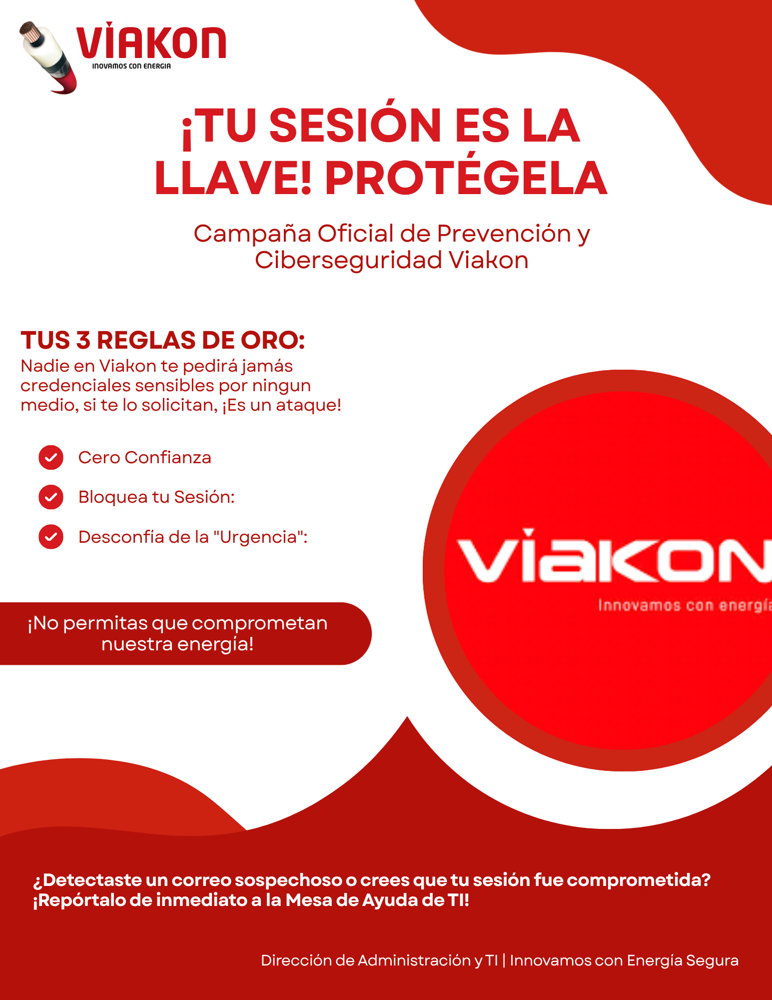

El propósito de este Sistema de Gestión de Seguridad de la Información (SGSI) es establecer los requisitos críticos para la protección de los activos de información gestionados por las direcciones del área de administración y TI.
Este alcance garantiza que el tratamiento de la información de los "Energizadores" cumpla con los pilares de Confidencialidad, Integridad y Disponibilidad, mitigando riesgos asociados al manejo de datos personales sensibles, registros financieros y bases de datos de los activos.
La aplicación de los requisitos de esta área se extiende a los siguientes procesos operativos y estratégicos:
Viakon es una marca Viakable, empresa del Grupo Xignux, dedicada a la fabricación y comercialización de conductores eléctricos. Somos una compañía de clase mundial que cuenta con la más avanzada tecnología para la fabricación y pruebas de nuestros productos. Ofrecemos al mercado conductores eléctricos confiables, seguros, eficientes y con una larga vida en servicio.
Viakon es una empresa con más de 70 años de experiencia, más de 5000 productos, 25 sucursales y más de 2000 empleados alrededor del mundo.
Filiales: QUIALITA ALIMENTOS, S de R.L de C.V, Protect Energy, Don Ferm MAgnekon S.A. de C.V.
Contamos con certificaciones ISO-9001 e ISO-14001 en todas las operaciones, lo que avala nuestra calidad de clase mundial.

Misión: “Transmitir energía que activa tu vida”.
Visión: Ser la empresa preferida del mercado de transmisión de energía, duplicando nuestro valor y ofreciendo la mejor experiencia para nuestros clientes.
Ética y Valores: Viakable se distingue por ser una empresa íntegra con estrictos principios éticos. Sus relaciones, negocios y operaciones están basados en su código de ética y valores. La empresa mantiene el compromiso de actuar siempre con apego a las leyes trabajando con transparencia y promoviendo una cultura organizacional basada en la honestidad.
Planeta: Analizamos e integramos iniciativas de mejora para mitigar el impacto ambiental (Consumo de agua, energía, materiales, emisiones y residuos). Viakable fortalece la cultura de responsabilidad ambiental mediante campañas de concientización.
Nuestra gente: El activo más importante es el capital humano. Mantenemos espacios de trabajo dignos, respetuosos, colaborativos y con comunicación constante. Fomentamos un ambiente abierto e incluyente impulsado mediante la mejora continua.
Comunidad: Viakon busca transformar positivamente las comunidades donde tiene presencia, generando relaciones ganar-ganar mediante iniciativas sociales con organizaciones de la sociedad civil.
Política de Calidad Viakon: Mejora continua para satisfacer y exceder los requerimientos de los clientes externos e internos.
Políticas Xignux: Entendimiento profundo de conceptos; Mejorar operaciones para ser la mejor opción del cliente; Incrementar sosteniblemente el crecimiento.
Política de Calidad, Ambiental, Salud y Seguridad: Comprometidos con proporcionar productos que satisfagan los requerimientos de clientes, proteger el medio ambiente, reducir riesgos laborales y promover condiciones de trabajo seguras respetando el modelo operativo CTX.

El organigrama corresponde a la estructura organizacional de una planta ubicada en San Luis Potosí (SLP), encabezada por Bernardo de la Rosa como Gerente de Planta SLP. Se divide en siete líneas de reporte directo correspondientes a gerencias y jefaturas:
El departamento integra dos funciones críticas: Soporte tecnológico/sistemas y Gestión financiera/contabilidad. Cuenta con cuatro reportes directos, organizados en dos subáreas:
1. Subárea de TI: Encargada del soporte técnico, mantenimiento de sistemas y monitoreo. Integrada por Carlos Arredondo (Ing. de soporte) y América Guerra (Practicante).
2. Subárea de Contabilidad: Encargada de la gestión financiera y procesos contables. Integrada por Claudia Denny Zaragoza (Analista) y América Salas (Practicante).
Esta sección establece el marco normativo internacional aplicable al SGSI para la Dirección de Administración y TI de Viakon. Las referencias constituyen la columna vertebral metodológica para proteger el ERP Corporativo, la red y las bases de datos.
| Norma ISO/IEC | Descripción y Aplicación en Viakon |
|---|---|
| 27001:2022 (Norma Base) |
Sistemas de Gestión de Seguridad de la Información — Requisitos. Funciona como hoja de ruta directiva para estructurar políticas de TI, definir alcance, comprometer a la Alta Dirección y establecer métricas de desempeño. |
| 27002:2022 | Controles de seguridad de la información. Guía la configuración técnica de activos corporativos (ej. reglas de contraseñas, MFA, segmentación de VLANs corporativas). |
| 27005:2022 | Gestión del riesgo. Metodología utilizada por el Comité de Seguridad para calcular el impacto financiero y operativo ante posibles ataques (Ransomware, accesos no autorizados). |
| 27000:2018 | Visión general y vocabulario. Permite estandarizar la terminología corporativa (CID, Amenaza, Vulnerabilidad) entre la Alta Dirección y el personal operativo. |
| 27017:2015 | Controles para servicios en la nube. Establece responsabilidades compartidas con proveedores SaaS/PaaS y asegura el cifrado de información financiera fuera del Data Center. |
| 27701:2019 | Gestión de la privacidad. Esencial para cumplir la LFPDPPP, controlando el PII de más de 2,000 colaboradores. |
| 27035-1:2023 | Gestión de incidentes. Base normativa utilizada por el CSIRT para contener amenazas e implementar aprendizaje post-incidente. |
Para fines de la implementación, los términos fundamentales se agrupan por su función dentro del ciclo de vida del SGSI.
| Término | Definición Operativa |
|---|---|
| Aceptación del riesgo | Decisión informada de asumir un riesgo concreto. |
| Activo (Asset) | Cualquier información o elemento relacionado con el tratamiento de la misma que tenga valor para la organización y requiera protección. |
| Alta dirección | Persona o grupo encargado de dirigir y controlar una organización al más alto nivel. |
| Amenaza (Threat) | Causa potencial de un incidente no deseado capaz de provocar daños a un sistema o a la organización. |
| Análisis de riesgos | Proceso sistemático para comprender la naturaleza del riesgo y determinar su nivel. |
| Análisis de riesgos cualitativo | Evaluación basada en escalas de valoración para determinar impacto y probabilidad. |
| Análisis de riesgos cuantitativo | Análisis basado en estimaciones de pérdidas financieras. |
| Ataque (Attack) | Intento de destruir, alterar, robar u obtener acceso no autorizado a un activo. |
| Auditoría (Audit) | Proceso de verificación independiente sobre cumplimiento de requisitos establecidos. |
| Auditor (Auditor) | Persona encargada de realizar la auditoría. |
| CID (CIA) | Acrónimo de Confidencialidad, Integridad y Disponibilidad. |
| Comunicación y consulta de riesgos | Procesos para compartir información y dialogar sobre gestión del riesgo. |
| Confidencialidad | Propiedad de la información de no ser revelada a individuos no autorizados. |
| Control (Control) | Medida o conjunto de medidas que modifican el riesgo. |
| Control de acceso | Garantizar que el acceso a los activos esté autorizado y restringido. |
| Disponibilidad (Availability) | Propiedad de la información de estar accesible cuando sea requerida. |
| Estimación de riesgos | Comparación de resultados del análisis de riesgos con criterios establecidos. |
| Evaluación de riesgos | Proceso global de identificación, análisis y estimación de riesgos. |
| Evento (Event) | Ocurrencia o cambio de un conjunto particular de circunstancias. |
| Evento de seguridad de la información | Ocurrencia identificada que indica una posible violación de la política de seguridad. |
| Gestión de incidentes de seguridad | Procesos para detectar, responder y aprender de incidentes de seguridad. |
| Gestión de riesgos | Actividades coordinadas para dirigir y controlar una organización respecto al riesgo. |
| Identificación de riesgos | Proceso de encontrar, reconocer y describir riesgos. |
| Impacto (Impact) | Coste para la empresa ocasionado por un incidente. |
| Incidente (Incident) | Evento o serie de eventos que comprometen operaciones y seguridad de la información. |
| Incidente de seguridad | Evento inesperado con probabilidad significativa de comprometer la seguridad. |
| Indicador (Indicator) | Medida que proporciona una estimación o evaluación. |
| Información documentada | Información controlada y mantenida por la organización. |
| Integridad (Integrity) | Propiedad relacionada con exactitud y completitud de la información. |
| Inventario de activos | Lista de recursos dentro del alcance del SGSI. |
| ISO/IEC 27001 | Norma internacional que establece requisitos para un SGSI. |
| Nivel de riesgo | Magnitud de un riesgo expresada como combinación de consecuencias y probabilidad. |
| Objetivo (Objective) | Resultado a alcanzar. |
| Organización (Organization) | Grupo de personas con responsabilidades y funciones propias. |
| Plan de continuidad | Estrategia para continuar funciones críticas ante eventos imprevistos (BCP). |
| Plan de tratamiento de riesgos | Documento que define acciones para gestionar riesgos. |
| Rendimiento (Performance) | Resultado medible relacionado con actividades, procesos o sistemas. |
| Riesgo (Risk) | Efecto de la incertidumbre sobre los objetivos. |
| Sarbanes-Oxley (SOX) | Ley estadounidense relacionada con auditoría y protección de información financiera. |
| Seguridad de la información | Preservación de la confidencialidad, integridad y disponibilidad. |
| Sistema de Información | Conjunto de aplicaciones, servicios y activos de TI. |
| SGSI / ISMS | Sistema de gestión para establecer, implementar y mejorar la seguridad de la información. |
| Tratamiento de riesgos | Proceso para modificar o mitigar el riesgo. |
| Vulnerabilidad (Vulnerability) | Debilidad de un activo o control que puede ser explotada por amenazas. |
Para garantizar la transparencia, legalidad y nulo impacto a las operaciones críticas de Viakon durante la auditoría, se establece:
Monitoreo Continuo de Activos
| Código | Activo de Información | Propietario / Ubicación | Proceso / Responsable | Clasificación CID |
|---|---|---|---|---|
| ACT-INT-01 | Bases de datos (SQL Server, SAN) | Gerente de TI / CPD principal | Gestión de datos críticos / Administrador de BD | C: Alta | I: Alta | D: Alta |
| ACT-INT-02 | Programa de capacitación (LMS) | Gerente de RRHH / Intranet | Capacitación / Coordinador | C: Media | I: Media | D: Media |
| ACT-INT-03 | Software de monitoreo (Firewalls) | Gerente Seguridad TI | Monitoreo / Analista | C: Media | I: Alta | D: Alta |
| ACT-INT-04 | Registros usuarios y credenciales (AD, SIAM) | Directorio Activo | Control de acceso / Adm. Identidades | C: Alta | I: Alta | D: Alta |
| ACT-INT-05 | Impresoras empresariales | Oficinas y planta | Impresión / Soporte TI | C: Media | I: Media | D: Media |
| Código | Activo de Información | Propietario / Ubicación | Proceso / Responsable | Clasificación CID |
|---|---|---|---|---|
| ACT-EXT-01 | Servicios de Nube (SaaS/PaaS) Azure/AWS | Gerente de TI / Nube | Productividad / Arquitecto de nube | C: Alta | I: Alta | D: Media |
| ACT-EXT-02 | Enlaces de Internet (ISP) | Infraestructura del ISP | Conectividad WAN / Ing. de redes | C: Media | I: Alta | D: Alta |
| ACT-EXT-03 | Proveedores Hosting Web (DNS, CDN) | Datacenter proveedor | Presencia digital / Webmaster | C: Media | I: Media | D: Media |
| ACT-EXT-04 | APIs de Servicios Financieros | Servidores banco / SAT | Facturación y pagos / Tesorero | C: Alta | I: Alta | D: Alta |
| ACT-EXT-05 | Servicios Auditoría Ciberseguridad | Consultora externa | Auditoría / Auditor externo | C: Alta | I: Alta | D: Media |
Establecer el marco de referencia para la protección de los activos de información de Viakon, garantizando: Confidencialidad, Integridad y Disponibilidad. Se busca mitigar riesgos ante amenazas internas y externas, asegurar el cumplimiento legal y consolidar la seguridad como un valor cultural dentro de la organización.
Alcance de Aplicabilidad: Es de cumplimiento obligatorio para personal interno, prestadores de servicios, proveedores y socios comerciales. El alcance técnico comprende toda la infraestructura organizacional (Servidores, Oficinas, Bases de datos, Software corporativo, Servicios en la nube).
Compromiso de la Dirección: La Alta Dirección asume la responsabilidad de liderar el SGSI mediante: Provisión de recursos financieros y personal, Revisión periódica del SGSI, y Promoción de cultura Zero Trust y Privilegios Mínimos.
Para asegurar el cumplimiento de las políticas descritas, se establece una matriz RACI para asignar responsabilidades, autoridades y niveles de participación dentro del SGSI.



| Activo | Amenaza | Vulnerabilidad | Consecuencia |
|---|---|---|---|
| Base de Datos | Exfiltración o alteración de información crítica. | Falta de MFA y cifrado avanzado. | Pérdida de confidencialidad y registros financieros. |
| ERP SAP/Oracle | Manipulación de transacciones. | Segregación de funciones deficiente. | Fraude financiero y errores CFDI. |
| Monitoreo de Red | Alteración de alertas de seguridad. | Accesos administrativos inseguros. | Ceguera operativa ante incidentes. |
| Credenciales | Phishing y fuerza bruta. | Contraseñas débiles. | Movimiento lateral y robo de identidades. |
| Laptops | Malware y robo físico. | Discos sin cifrar. | Fuga de propiedad intelectual. |
| Servidores | Ransomware. | Segmentación deficiente. | Interrupción total de operaciones. |
| Servicios Nube | Robo de cuentas cloud. | Falta de auditorías al proveedor. | Compromiso de información corporativa. |
| Hosting Web | Explotación de fallos OWASP. | Ausencia de WAF y parches. | Daño reputacional y fuga de datos. |
| Rango | Nivel de Riesgo | Estrategia |
|---|---|---|
| 1 - 4 | Bajo | Aceptar y monitorear. |
| 5 - 9 | Medio | Mitigar o transferir. |
| 10 - 14 | Alto | Controles prioritarios. |
| 15 - 19 | Muy Alto | Intervención inmediata. |
| 20 - 25 | Extremo | Eliminar o mitigar críticamente. |
| Activo | P | I | R | Nivel |
|---|---|---|---|---|
| Base de Datos | 4 | 5 | 20 | Extremo |
| ERP SAP/Oracle | 3 | 5 | 15 | Muy Alto |
| Credenciales | 5 | 5 | 25 | Extremo |
| Servidores | 3 | 5 | 15 | Muy Alto |
| Servicios Nube | 4 | 5 | 20 | Extremo |
| Activo | Mecanismo de Control |
|---|---|
| Base de Datos | Cifrado AES-256, MFA y monitoreo SIEM. |
| ERP SAP/Oracle | MFA, segregación de funciones y cierre automático de sesión. |
| Credenciales | Políticas de contraseñas seguras y gestor corporativo. |
| Laptops | Full Disk Encryption, VPN y EDR. |
| Servidores | Bastionado CIS, VLANs y respaldos semanales. |
| Hosting Web | WAF, SSL/TLS y escaneo mensual de vulnerabilidades. |
En esta fase del proyecto se implementa la Cláusula 7 (Soporte) del estándar ISO/IEC 27001, enfocada en dotar al Sistema de Gestión de Seguridad de la Información (SGSI) de recursos humanos, tecnológicos y de conocimiento necesarios para su correcta operación.
El objetivo principal es fortalecer la seguridad tanto en áreas administrativas como en el piso de manufactura, asegurando que operarios, técnicos y personal administrativo comprendan su responsabilidad dentro de la protección de los activos críticos de Viakon.
Se reconoce que el factor humano representa uno de los principales riesgos para la organización, debido a prácticas inseguras como: Uso compartido de contraseñas, Sesiones abiertas en terminales, Ingeniería social, y Manejo incorrecto de información.
| Detalle de la Sesión | Información |
|---|---|
| Empresa | Viakon |
| Departamento | Dirección de Administración y TI |
| Sistema | Sistema de Gestión de Seguridad de la Información |
| Asunto | Definición Operativa - Cláusula 7: Soporte |
| Fecha | 6 de mayo de 2026 |
| Sede | DCN Tower / Sala de Juntas Principal |
| Horario | 10:00 hrs - 11:00 hrs |
Establecer y documentar las directrices correspondientes a la Cláusula 7 (Soporte) del SGSI, garantizando:
| Nombre | Rol | Asistencia |
|---|---|---|
| Laura Ivon Montelongo Martínez | Líder de Proyecto / CISO | ✔ |
| Cesar Yahir Benites Rangel | Especialista Infraestructura TI | ✔ |
| Carol Elizabeth Cortes Beltrán | Cumplimiento Normativo | ✔ |
| América Fabiola Guerra Ramírez | Gestión de Riesgos | ✔ |
| Gustavo Michael Larios Guerra | Administrador de Sistemas | ✔ |
Punto 1: Recursos y Entorno Técnico. Se evaluaron vulnerabilidades físicas y lógicas relacionadas con HMI, Escáneres de inventario y Terminales compartidas. Acuerdo: Se aprobó la implementación de políticas GPO para bloquear sesiones automáticamente tras 5 minutos de inactividad.
Punto 2: Competencia y Concientización. Se detectó la necesidad de eliminar prácticas inseguras como contraseñas en post-its, préstamo de credenciales y sesiones abiertas. Acuerdo: Implementar el “Programa de Concientización Técnica” mediante Safety Talks de 5 minutos antes de iniciar operaciones.
Punto 3: Información Documentada. Se acordó migrar la documentación técnica hacia un repositorio centralizado, utilizando marcas de agua dinámicas, clasificación de confidencialidad y versionamiento controlado.
| Tarea | Responsables | Estatus |
|---|---|---|
| Diseñar infografías de concientización. | Cortes Beltrán / Guerra Ramírez | En proceso |
| Distribuir manuales técnicos seguros. | Benites / Larios / Puente | Pendiente |
| Configurar bloqueo automático. | Montelongo / Rodríguez | Pendiente |
| Validar horarios de Safety Talks. | Montelongo Martínez | Pendiente |
La siguiente reunión de seguimiento fue programada para el 22 de mayo de 2026, con el objetivo de revisar el Material didáctico diseñado, Despliegue del bloqueo de sesiones, y Validación de controles en planta.
Política Seleccionada: Servidores Físicos y Virtuales.
En esta fase se establecen objetivos, riesgos, controles y recursos necesarios para garantizar la seguridad de los servidores físicos y virtuales dentro de la organización.
Objetivos: Proteger el acceso físico y lógico a los servidores críticos. Implementar segmentación de red mediante VLANs. Garantizar disponibilidad e integridad de la información. Aplicar hardening en Windows y Linux. Reducir vulnerabilidades y accesos no autorizados.
Riesgos Identificados: Acceso físico no autorizado al centro de datos, pérdida de información por fallos de hardware, propagación lateral de ataques, explotación de vulnerabilidades críticas, e interrupción de servicios críticos.
Actividades Planificadas: Instalación de controles biométricos, cámaras y cerraduras electrónicas. Segmentación mediante VLANs. Calendario automatizado de respaldos. Aplicación de hardening y configuración de firewalls/antivirus/IDS. Monitoreo continuo.
Configuraciones de Hardening: Deshabilitación de puertos innecesarios. Restricción de accesos remotos. Configuración segura de contraseñas. Parchado periódico de sistemas operativos. Configuración de firewall local. Activación de registros y auditorías. Implementación de antivirus y EDR.
Recursos Necesarios: Software de respaldo y recuperación. Herramientas de virtualización. Equipos biométricos y videovigilancia. Firewalls y herramientas SIEM. Personal capacitado en seguridad informática.
| Indicador | Meta |
|---|---|
| Respaldos exitosos | ≥ 98% |
| Accesos físicos no autorizados | 0 |
| Cumplimiento hardening | 100% |
| RTO | ≤ 2 horas |
| Disponibilidad de servidores | 99.9% |
Normativas y Buenas Prácticas: ISO 27001, NIST Cybersecurity Framework, CIS Benchmarks, Políticas internas de seguridad.
En esta etapa se implementan los controles y medidas definidas durante la planificación.
Acciones Realizadas: Instalación de lectores biométricos y cámaras. Configuración de VLANs. Implementación de respaldos automáticos. Validación de restauración de respaldos. Deshabilitación de servicios inseguros. Aplicación de actualizaciones de seguridad. Configuración de firewalls y monitoreo. Centralización de logs y alertas.
Evidencias: Bitácoras de acceso físico. Reportes de respaldos. Evidencias de restauración. Documentación VLAN. Checklist hardening. Reportes SIEM.
Se evalúa la efectividad de los controles implementados y el cumplimiento de los objetivos de seguridad.
Actividades de Verificación: Auditorías de accesos físicos. Validación de restauración. Escaneo de vulnerabilidades. Revisión de firewalls y VLANs. Evaluación de hardening. Monitoreo de logs.
Resultados Esperados: Reducción de accesos no autorizados. Respaldos funcionales. Menor cantidad de vulnerabilidades críticas. Mejor disponibilidad de servicios. Detección temprana de incidentes.
| Métrica | Resultado Esperado |
|---|---|
| Respaldos exitosos | 100% |
| Accesos físicos no autorizados | 0 |
| Vulnerabilidades críticas | Reducción significativa |
| Cumplimiento hardening | 100% |
| Disponibilidad de servicios | ≥ 99.9% |
Con base en los resultados obtenidos, se implementan acciones correctivas y mecanismos de mejora continua.
Acciones de Mejora: Actualización periódica de políticas. Mejora de autenticación física y lógica. Automatización de monitoreo y alertas. Revisiones mensuales de hardening. Corrección de configuraciones inseguras. Optimización de respaldos. Ajuste de firewalls y segmentación. Simulacros de recuperación ante desastres. Capacitación continua del personal.
Mejora Continua: La aplicación del ciclo PDCA permite fortalecer continuamente la seguridad de los servidores físicos y virtuales, optimizando la disponibilidad, integridad y confidencialidad de la información. Asimismo, contribuye a reducir riesgos relacionados con accesos no autorizados, pérdida de información, vulnerabilidades críticas y fallas operativas, alineado con estándares internacionales.
Objetivo de la Auditoría: Evaluar la eficacia del Sistema de Gestión de Seguridad de la Información (SGSI) implementado en Viakon, verificando la conformidad de los controles técnicos y administrativos con los requisitos de la norma ISO/IEC 27001:2022 y las políticas internas.
Este instrumento evidencia la interacción real con los dueños de procesos para validar los controles técnicos.
Auditor Líder (Laura Ivon M.): “De acuerdo con la política BD-01, todas las consultas a tablas con información financiera deben ser auditadas. ¿Puede mostrarme en la consola Splunk los registros de actividad del último mes?”
DBA Auditado: “Actualmente, Splunk solo ingiere logs perimetrales del firewall y Active Directory. Los logs SQL permanecen localmente por limitaciones de licenciamiento.”
Auditor Líder: “¿Cuál es el tiempo de retención de logs?”
DBA Auditado: “Los registros se sobrescriben cada 7 días por falta de espacio.”
Conclusión de la Entrevista: Vulnerabilidad Crítica. Se confirma que no existe segregación de funciones (el DBA audita sus propios accesos) y no se cumple la retención mínima de 6 meses.
Objetivo de Control: Garantizar confidencialidad e integridad mediante cifrado y control privilegiado.
| ID | Control | Resultado | Riesgo |
|---|---|---|---|
| BD-01 | Cifrado TDE y DDM en tablas críticas. | CUMPLE | Bajo |
| BD-02 | MFA obligatorio para sysadmin. | CUMPLE | Bajo |
| BD-03 | Trazabilidad y SIEM. | NO CUMPLE | Alto |
| BD-04 | Just-In-Time Access. | CUMPLE | Bajo |
| BD-05 | Backups y rotación criptográfica. | CUMPLE | Bajo |
Dictamen Final: CUMPLIMIENTO PARCIAL. Se requiere integrar los logs SQL al SIEM corporativo.
Objetivo: Mitigar riesgos de fraude interno y proteger registros financieros.
| ID | Control | Resultado |
|---|---|---|
| ERP-01 | MFA y acceso condicional. | CUMPLE |
| ERP-02 | Segregación de funciones. | CUMPLE |
| ERP-03 | Aprobación trazable de perfiles. | CUMPLE |
| ERP-04 | Cierre automático de sesiones. | CUMPLE |
Dictamen Final: CUMPLE.
| Activo | Resultado | Riesgo |
|---|---|---|
| Software de Monitoreo de Red | Cumplimiento Parcial | Medio |
| Registros y Credenciales | Cumple | Bajo |
| Impresoras Empresariales | No Cumple | Alto |
| Laptops Corporativas | Cumple | Bajo |
| Administración Remota | Cumple | Bajo |
| Servidores Físicos y Virtuales | Cumple | Bajo |
| Intranet Corporativa | Cumplimiento Parcial | Medio |
| Documentación y Procesos | No Cumple | Alto |
También se evaluaron activos externos relacionados con: Servicios Cloud SaaS/PaaS, ISPs y enlaces WAN, Hosting Web, APIs Financieras, DNS Corporativo, Videoconferencia, y Redes Sociales Corporativas. La mayoría de los controles evaluados presentaron cumplimiento satisfactorio bajo marcos ISO 27001, OWASP, NIST y Zero Trust.
No Conformidades Mayores:
NC-M-01: Ausencia de trazabilidad y retención de logs en bases de datos críticas.
No Conformidades Menores:
Observaciones:
Oportunidades de Mejora:
Tras la revisión documental, entrevistas técnicas y pruebas de validación, el SGSI de Viakon presenta un cumplimiento general del 85%. La organización demuestra: Arquitectura Zero Trust sólida, Alta resiliencia perimetral, Controles robustos en identidad y acceso.
Sin embargo, persisten brechas críticas relacionadas con: Retención de logs, Trazabilidad SQL, Gestión documental Legacy.
Dictamen Final: CUMPLE.
ID: INC-2026-054 | Fecha y Hora: Miércoles 13 de mayo, 23:45 hrs.
Afectación Principal: Confidencialidad y Disponibilidad
Resumen para Alta Dirección (¿Qué ocurrió? / ¿Cómo ocurrió?): Se materializó una intrusión no autorizada dentro del núcleo de la red corporativa de Viakon. Un actor malicioso logró infiltrarse evadiendo el perímetro mediante técnicas avanzadas de ingeniería social y secuestro de sesión (Session Hijacking). A pesar del MFA, aprovechó credenciales válidas de un Energizador legítimo y utilizó privilegios excesivos en el ERP para movimiento lateral, intentando desplegar cargas destructivas.
Activos Críticos Afectados: Infraestructura Operativa (Terminales críticas de manufactura afectadas por corrupción de software), Sistemas Estratégicos (Servidores centrales y BD del ERP Corporativo), Activos de Información (Exposición de registros financieros, operativos y datos personales).
| Tipo de Impacto | Descripción |
|---|---|
| Operativo | Interrupción de operaciones durante 4 horas y 15 minutos en terminales de manufactura. |
| Legal y Normativo | Riesgo de incumplimiento de la LFPDPPP por exposición de datos personales. |
| Financiero | Costos asociados a recuperación, forense digital y operación del CSIRT. |
| Reputacional | El ataque fue contenido antes de afectar a clientes externos o proveedores. |
La investigación forense determinó (mediante Cyber Kill Chain, Modelo Diamante y Correlación SIEM) que el incidente se originó debido a múltiples incumplimientos dentro del SGSI:
Resultado Positivo
Área de Oportunidad
Se integrarán playbooks SOAR para reducir el MTTR en un 60% durante futuros incidentes.
